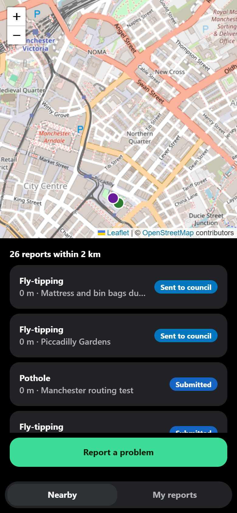
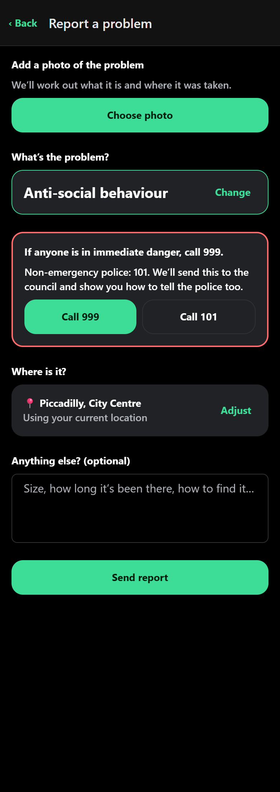
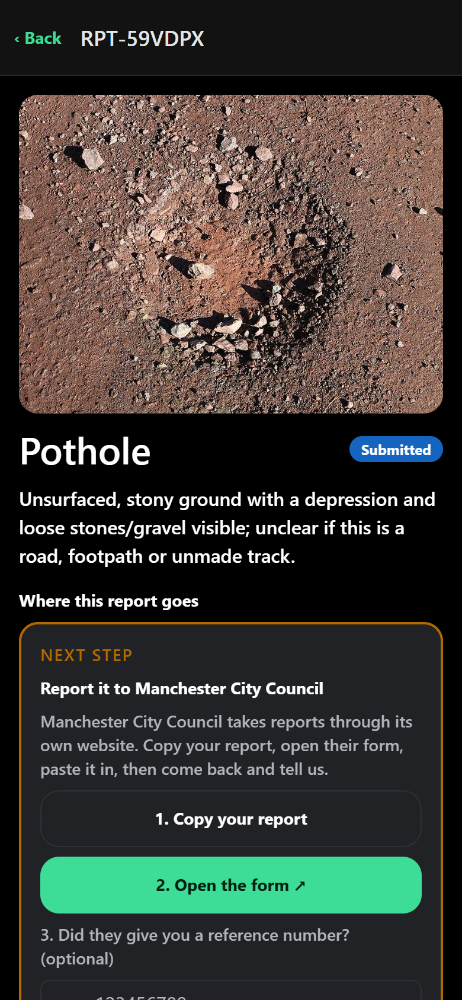
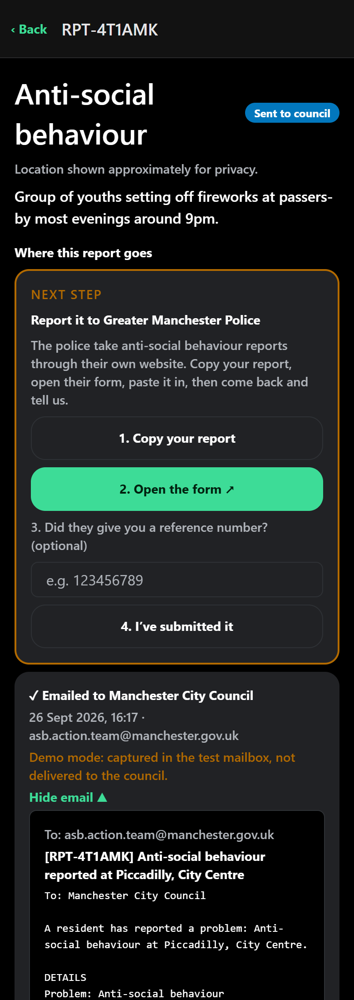

Report local problems in a snap.
Potholes, fly-tipping, missed bins, graffiti, anti-social behaviour. Take a photo and the app works out what the problem is and who's responsible, then gets it to them.
How it works
- Snap it. Add a photo, and AI suggests the category and a description.
- Pin it. It uses the photo's location or yours, and you can adjust it on the map.
- We route it. Council or police? County or district? It works that out for anywhere in England.
- Track it. Emailed or linked to the council's own form, then followed through to fixed.
Screenshots




What's inside
- Routing for all 317 English councils, including two-tier areas, plus all 39 English police forces.
- 152 published council email addresses across 68 councils, and more than 2,500 links to councils' own reporting pages.
- AI photo checks with Claude: category, description and severity. Photos that may show faces or number plates stay private until a moderator checks them.
- Built with Expo (iOS, Android and web) and Supabase (Postgres/PostGIS and edge functions).